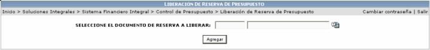
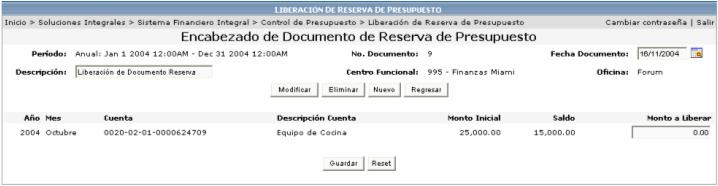

Esta opción permite devolver montos reservados al disponible. Aquí se liberan documentos de reserva para utilizarlos cuando se vayan a ocupar. Los documentos que se desplieguen en la lista, serán los que le correspondan al usuario (o sea los documentos de reserva creados por el mismo):

Al presionar el botón
 se despliega el encabezado y detalle del documento, con
la información respectiva de la reserva. En el campo
se despliega el encabezado y detalle del documento, con
la información respectiva de la reserva. En el campo  se debe de digitar el monto que se desea liberar del presupuesto
que se reservo con anterioridad:
se debe de digitar el monto que se desea liberar del presupuesto
que se reservo con anterioridad:

Una vez ingresado el monto
a liberar, se debe dar click sobre el botón  para
que el sistema guarde la modificación del monto. Una vez que el monto
es el correcto, y para que se realice el movimiento presupuestal de regresar
lo reservado al disponible según lo que se definió, se da click sobre
el botón
para
que el sistema guarde la modificación del monto. Una vez que el monto
es el correcto, y para que se realice el movimiento presupuestal de regresar
lo reservado al disponible según lo que se definió, se da click sobre
el botón  . El sistema preguntará si se desea llevar acabo
tal acción y si la respuesta es afirmativa, la afectación presupuestal
es realizada.
. El sistema preguntará si se desea llevar acabo
tal acción y si la respuesta es afirmativa, la afectación presupuestal
es realizada.